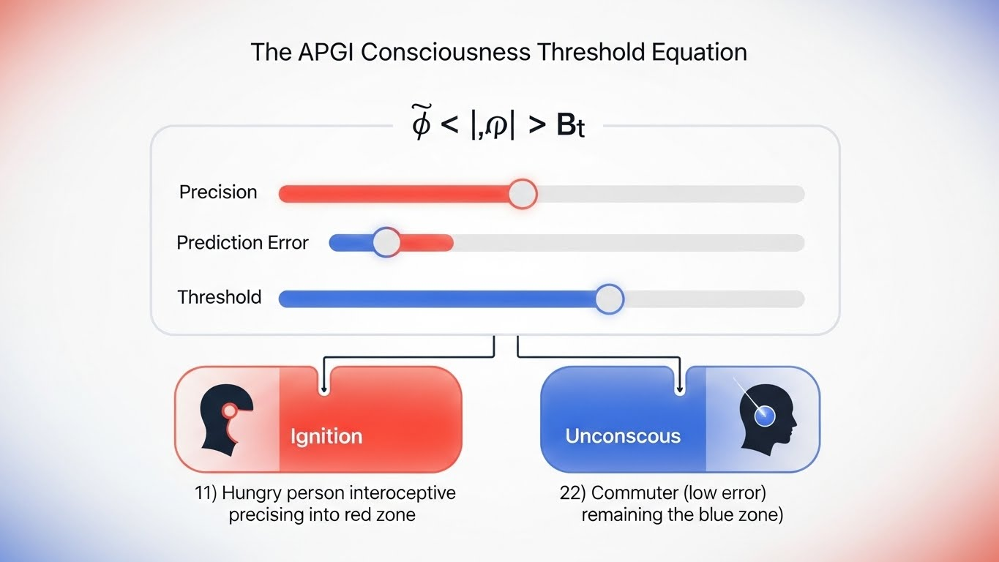

The APGI Framework maps your unique consciousness signature across three dimensions: threshold sensitivity, interoceptive accuracy, and somatic bias. Discover yours in 3 minutes.
Take the Free AssessmentYou've probably wondered:
Most consciousness research offers descriptions, not explanations. APGI gives you both.
What if consciousness isn't a thing you have, but a process your brain runs?
The APGI Framework (Active Predictive Global Integration) is a new model of consciousness based on a simple but powerful idea: Your brain is constantly predicting what comes next, and consciousness emerges when those predictions meet surprising new information.
You don't passively experience reality. Your brain generates a model of the world, compares it to incoming sensory data, and updates only when there's a mismatch—a prediction error. What crosses from unconscious processing into conscious awareness depends on three key dimensions:
1. Threshold Sensitivity — How easily information breaks into your awareness. Some people have a wide-open aperture (noticing everything); others have a narrow focus (deep concentration, fewer distractions).
2. Interoceptive Accuracy — How precisely you perceive your internal bodily states. Are you in tune with hunger, heartbeat, tension? Or do you override these signals until they're extreme?
3. Somatic Bias — How much your bodily sensations dominate your conscious experience. Do you make decisions based on "gut feelings," or through logical analysis? Do physical discomforts derail your focus, or barely register?
These three dimensions define your consciousness signature—your unique way of weighting sensory information, setting thresholds for awareness, and integrating bodily signals into thought.
The book explores the science behind APGI, walks through 24 chapters of applications (from meditation to decision-making to free will), and gives you practical protocols for adjusting each dimension based on what you need in any given moment.
The result? You stop wondering why you think the way you do—and start working with your consciousness architecture instead of against it.

Discover how your brain processes reality through the APGI Framework
Estimated Time: 3-4 minutes | Questions: 12 questions
Your consciousness has a unique architecture—a specific way of weighting sensory information, setting thresholds for awareness, and processing prediction errors. This assessment maps your consciousness signature across the three core APGI dimensions: Threshold Sensitivity, Interoceptive Accuracy, and Somatic Bias. Answer honestly for the most accurate results.
We respect your inbox. One email per week, unsubscribe anytime. Privacy Policy
“Finally, a model that explains why my meditation practice varies so much day to day. The APGI assessment was eye-opening.”
“As a neuroscientist, I appreciate how APGI bridges rigorous theory with lived experience. Highly recommended.”
“I used the framework to tweak my morning routine—small shifts in attention and interoception have made a huge difference.”
24 chapters | Research-backed | Practical applications
Get the Book Get Book + App Bundle